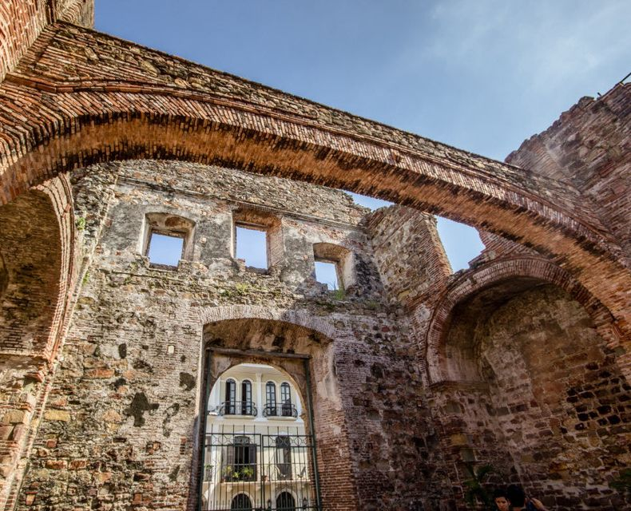

PANAMAIN CONTEXTby Diego
¿Sabías que
el Arco Chato del convento de Santo Domingo se mantuvo en pie casi tres siglos sin soporte alguno — y llegó a citarse como prueba de que Panamá era una tierra estable para construir el Canal?

El Arco Chato, Casco Antiguo